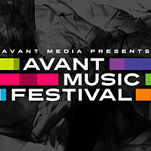

past performanceAvant Media Presents the Inaugural Avant Music Festival Featuring works by John Cage, Randy Gibson, Karlheinz Stockhausen and more. |
The Avant Music Festival will feature some of the most talented young interpreters in New York, highlighting the influence of the performer on music from the 20th century and today. The performers appearing are dedicated to the vibrant history and the exciting future of modern classical music. The festival is curated by Avant Media artistic director, Randy Gibson, and experimental vocalist Megan Schubert to reflect the intense and multi-faceted relationship between composer and performer. FRI, FEBRUARY 19, 2010Randy Gibson’s Apparitions of The Four Pillars, an immersive sound world of pure primal harmonic relationships and visceral, improvised melodies. With special guest soloist: experimental violinist, Tom Chiu. SAT, FEBRUARY 20, 2010Music of John Cage featuring members of loadbang, MIVOS quartet, Megan Schubert, Randy Gibson, and Jude Traxler. WED, FEBRUARY 24, 2010Musik für Solisten, solo performances by some of the most talented young interpreters in New York: featuring Nicole Camacho, Annie Lyle, Mariel Roberts, Megan Schubert, Jude Traxler and Kobe Van Cauwenberghe. FRI, FEBRUARY 26, 2010Music of Karlheinz Stockhausen featuring Am Himmel wandre ich performed by Megan Schubert and Jeff Gavett and Die 7 Lieder der Tage performed by Christie Finn. SAT, FEBRUARY 27, 2010Randy Gibson’s Apparitions of The Four Pillars *All performances start at 8pm. Full details about all performances can be found on the Avant Media website: www.avantmedia.org |
showtimes:Fri. February 19th @ 8PM Sat. February 20th @ 8PM Wed. February 24th @ 8PM Fri. February 26th @ 8PM Sat. February 27th @ 8PM tickets:Ticket sales is closed. Avant Media supports the production and performance of collaborative artistic projects. Focusing on live performance, film, and installation, Avant Media promotes a method of parallel collaboration that engages all members of the creative team from concept through realization. For detailed information on Avant Music Festival, please visit www.avantmedia.org |
upcoming performances |
|||
 |
|||
| EVQ Film Festival 2018 August 20-25 |
|||
performance archives |
|||
| 2018 | 2017 | 2016 | 2015 |
| 2014 | 2013 | 2012 | 2011 |
| 2010 | 2009 | 2008 | 2007 |